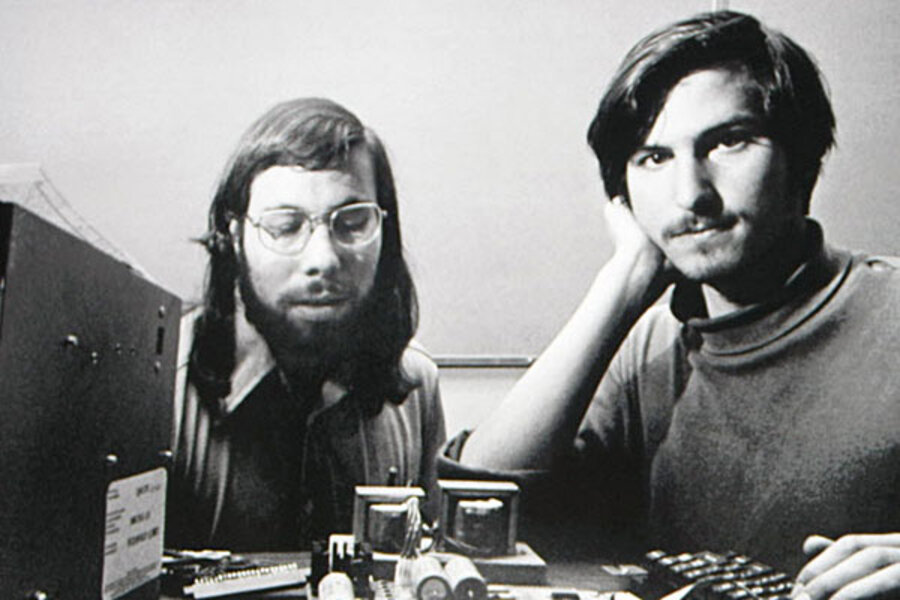

Steve Jobs
Fundador de la empresa Apple Computer y revolucionario tecnológico, un genio en total simplicidad.

Steve Jobs a la derecha y Steve Wozniak a la izquierda, ambos fundadores de Apple en sus primeros años de emprendimiento.
Línea de tiempo de la historia de Steve Jobs en Apple Computer:
- 1971 - Steve Jobs y Steve Wozniak se conocen
- 1974 - Steve Jobs trabaja como fabricante de videojuegos en Atari
- 1976 - Se funda la empresa Apple Computer, inc
- 1977 - La compañia lanza el Apple II
- 1983 - Apple presenta Lisa, la primer computadora con mouse
- 1984 - Lanzamiento de la Macintosh, computadora portatil
- 1985 - La junta directiva despide a Steve Jobs de Apple
- 1986 - Steve Jobs compra Pixar
- 1997 - Apple compra NeXT y Steve regresa a Apple
- 1998 - Se lanza al mercado el iMac
- 2002 - Presentación de iPOD y iTUNES
- 2007 - Apple presenta el iPhone, uno de los primeros teléfonos smart y sin teclado físico
- 2010 - Presentación de iPAD, tablet con pantalla táctil
- 2011 - Muere Steve Jobs a los 56 años
“No tenemos la oportunidad de hacer muchas cosas, por lo que cada una de ellas debería ser excelente. Porque ésta es nuestra vida. La vida es breve, y después morimos, ¿lo sabes? Nosotros elegimos qué hacer con nuestras vidas. Así que más vale que sea algo impresionantemente bueno. Más vale que valga la pena”.
-- Steve Jobs